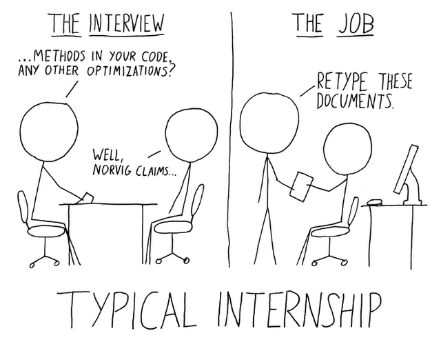

Tests
Campus d'Estiu d'Innovació Tecnològica UIB 2015
Jordi Llull
CTO a habitissimo
Què són els tests?
Què ens aporten els tests?
Desenvolupament àgil
Tipus de tests
Becari



* Peter Norvig [vídeo]
Tests automatitzats
- Tests unitaris
- Tests d'integració
- Tests funcionals
- Tests d'acceptació
Anam per feina
$ git clone https://github.com/jordillull/unit-tests-uib-2015.gitPython unittest
import unittest
class MyTest(unittest.TestCase):
def testToUpper(self):
self.assertEqual(toUpper('Hello world'), 'HELLO WORLD')
def toUpper(str):
new_str = ""
for chr in str:
new_str.append(chr.upper())
return str
if __name__ == '_main__':
unittest.main()
$ python3 mytest.py
E
======================================================================
ERROR: testToUpper (__main__.MyTest)
----------------------------------------------------------------------
Traceback (most recent call last):
File "mytest.py", line 14, in testToUpper
self.assertEqual(toUpper('Hello world'), 'HELLO WORLD')
File "mytest.py", line 7, in toUpper
new_str.append(chr.upper())
AttributeError: 'str' object has no attribute 'append'
----------------------------------------------------------------------
Ran 1 test in 0.000s
FAILED (errors=1)
Oops
def toUpper(str):
new_str = ""
for chr in str:
new_str.append(chr.upper())
return str
def toUpper(str):
new_str = ""
for chr in str:
new_str += chr.upper()
return str
Oops x2
$ python3 mytest.py
F
======================================================================
FAIL: testToUpper (__main__.MyTest)
----------------------------------------------------------------------
Traceback (most recent call last):
File "mytest.py", line 14, in testToUpper
self.assertEqual(toUpper('Hello world'), 'HELLO WORLD')
AssertionError: 'Hello world' != 'HELLO WORLD'
- Hello world
+ HELLO WORLD
----------------------------------------------------------------------
Ran 1 test in 0.000s
FAILED (failures=1)
Oops x2
def toUpper(str):
new_str = ""
for chr in str:
new_str += chr.upper()
return str
Ok!
$ python3 mytest.py
.
----------------------------------------------------------------------
Ran 1 test in 0.000s
OK
Mocks
Quan empram mocks?
- Volem testejar una funcionalitat de manera independent (Test unitari)
- Volem evitar la crida d'alguna funcionalitat.
Exemple: registre d'usuari
class User:
def __init__(self, email, name):
self.email = email
self.name = name
def registerUser(email, name, db, mailer):
user = User(email, name)
db.insert_user(user)
mailer.send_email(usere.email, "Welcome")
return user
class Mailer:
def send_email(self, email, message):
raise NotImplementedError("Not implemented yet")
class DB:
def insert_user(self, user):
raise NotImplementedError("Not implemented yet")
Exemple: registre d'usuari (II)
class MockTest(unittest.TestCase):
TEST_EMAIL = 'student@campus.uib.es'
TEST_NAME = 'Student'
def testRegisterUser(self):
user = registerUser(self.TEST_EMAIL,
self.TEST_NAME,
DB(),
Mailer()
)
self.assertIsInstance(user, User)
self.assertEqual(user.email, self.TEST_EMAIL)
self.assertEqual(user.name, self.TEST_NAME)
if __name__ == '__main__':
unittest.main()
Exemple: registre d'usuari (III)
class MockTest(unittest.TestCase):
TEST_EMAIL = 'student@campus.uib.es'
TEST_NAME = 'Student'
def testRegisterUser(self):
mock_db = Mock(DB)
mock_mailer = Mock(Mailer)
user = registerUser(self.TEST_EMAIL,
self.TEST_NAME,
mock_db,
mock_mailer
)
self.assertIsInstance(user, User)
self.assertEqual(user.email, self.TEST_EMAIL)
self.assertEqual(user.name, self.TEST_NAME)
Exemple: registre d'usuari (IV)
class MockTest(unittest.TestCase):
def testRegisterUser(self):
mock_db = Mock(DB)
mock_mailer = Mock(Mailer)
user = registerUser(self.TEST_EMAIL,
self.TEST_NAME,
mock_db,
mock_mailer
)
mock_db.insert_user.assert_called_once_with(user)
mock_mailer.send_email.assert_called_once_with(self.TEST_EMAIL, "Welcome")
self.assertIsInstance(user, User)
self.assertEqual(user.email, self.TEST_EMAIL)
self.assertEqual(user.name, self.TEST_NAME)
TDD
Test Driven Development
Escrivim primer els tests. Després desenvolupam.
Integració continua
$ git clone https://github.com/jordillull/quantum-computing.gitSelenium
from selenium import webdriver
import unittest
from selenium.webdriver.support.ui import WebDriverWait
from selenium.webdriver.support import expected_conditions
from selenium.webdriver.common.by import By
SEARCH_URL = "http://www.google.es"
MAX_WAIT_TIME = 10
class TestHabitissimo(unittest.TestCase):
def __init__(self, methodName):
super().__init__(methodName)
self.driver = webdriver.Firefox()
. def search_on_google(self):
self.driver.get(SEARCH_URL)
search_input = self.driver.find_element_by_id("lst-ib")
search_input.send_keys("habitissimo")
search_input.submit()
def test_habitissimo_is_first_result(self):
self.search_on_google()
def test_habitissimo_is_first_result(self):
self.search_on_google()
first_result = self.wait_for_1st_google_result()
first_result.find_element_by_tag_name("a").click()
self.wait_for_redirect("http://www.habitissimo.es")
self.assertIs(True, "habitissimo.es" in self.driver.current_url )
. def wait_for_1st_google_result(self):
wait = WebDriverWait(self.driver, MAX_WAIT_TIME)
first_result = wait.until(
expected_conditions.element_to_be_clickable( (By.CLASS_NAME, "g") )
)
return first_result
def wait_for_redirect(self, url_to_wait_for):
wait_for_redirect = WebDriverWait(self.driver, MAX_WAIT_TIME)
wait_for_redirect.until(lambda driver: url_to_wait_for in driver.current_url)
Conclusions
- Augmenten de la qualitat del codi
- +20% temps desenvolupament
- -60% de manteniment
- Millor començar per tests d'acceptació